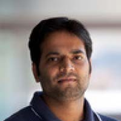

WORK HISTORY
October 2022 - Current
Senior Project Scientist
Indian Institute of Technology Delhi
I am presently engaged with the Indian Institute of Technology Delhi, contributing to the RF Network Stack project in the capacity of a Senior Project Scientist.
My pivotal role within this initiative encompasses the refinement of a proprietary RF network software stack, meticulously aligned with the IEEE 802.15.4 standard.
Throughout the course of my involvement, my responsibilities have encompassed:
- Project Timeline Management: Orchestrating the project's temporal trajectory, ensuring adherence to predefined milestones and deadlines.
- Proprietary GCC Build System Development: Crafting a bespoke GCC build system tailored to our specific needs, facilitating seamless software compilation and hardware debugging..
- Proprietary RF Networking Stack Development: Fostering the evolution of a proprietary RF networking stack grounded in the IEEE 802.15.4 standard, constituting a pivotal aspect of the project's technical foundation.
- Tailored Physical and MAC Layer Elaboration: Delving into the realms of customized Physical (PHY) and Medium Access Control (MAC) layer development for the RF Network Stack, underpinning efficient wireless communication.
- Custom Shell Script Composition and Management: Devising, implementing, and overseeing bespoke shell scripts calibrated to our proprietary RF stack, thus fostering streamlined development.
- Custom Unified Script Development: Engineering a distinctive unified script, designed to confer compatibility upon the proprietary software stack across diverse operating system platforms.
- CI/CD-Enabled Packaging and Dissemination: Spearheading the packaging and distribution of the proprietary software stack through robust Continuous Integration and Continuous Deployment (CI/CD) pipelines.
In this capacity, I am dedicated to steering the project towards its objectives while harnessing a suite of specialized skills encompassing project management, software development, and system integration.
October 2019 - September 2022
Project Scientist
Indian Institute of Technology Delhi
In the preceding duration, I collaborated with the esteemed Indian Institute of Technology Delhi, contributing to the Li-Fi Networks project under the aegis of sponsorship from the Department of Telecommunications.
In my capacity as a Project Scientist, my focus was channeled into the realms of embedded hardware and software for the Li-Fi network.
Over the course of my engagement, my undertakings encompassed:
- Linux Operating System Proficiency for ARM-Based Xilinx MPSoC's: I proficiently navigated the intricacies of the Linux operating system, optimizing it for employment on ARM-based Xilinx MPSoC (Multiprocessor System-on-Chip) architectures.
- Tailored Linux Kernel Module Development: My responsibilities extended to the development of specialized Linux kernel modules, custom-tailored to the project's unique requisites.
- Kernel Layer Networking Stack Advancements: I contributed to the enrichment of the networking stack at the kernel layer, enhancing the performance and capabilities of the Li-Fi network.
- Custom Embedded Linux Distribution Creation via Yocto Project: With expertise, I engineered a bespoke embedded Linux distribution employing the Yocto Project framework, meticulously designed to cater to the Li-Fi project's specific demands.
- Digital Circuit Simulation through Cadence OrCAD: I skillfully conducted digital circuit simulations, leveraging Cadence OrCAD, to ascertain the functionality and integrity of circuit designs.
- Printed Circuit Board Design Utilizing Altium Designer: I successfully conceptualized and executed designs for printed circuit boards using Altium Designer, ensuring precision and functionality.
- DevOps Process Implementation for Streamlined Development: Recognizing the significance of efficiency, I instituted DevOps processes to streamline project development, optimizing collaboration and deployment.
- Diverse Application Development: My repertoire extended to the creation of various applications, including Python-based GUIs, Linux shell applications, and C# Windows console applications.
Throughout this tenure, I consistently endeavored to drive the Li-Fi Networks project forward by harnessing a diverse skill set encompassing hardware-software integration, circuit design, Linux proficiency, and application development.
EDUCATION
2015-2019
Bachelor of Technology (Electronics and Communications)
JIMS Engineering Management and Technical Campus
Upon the culmination of my secondary education, I made a determined choice to embark on a path of academic pursuit, enrolling in the Bachelor of Technology program. During my undergraduate tenure, I elected to specialize in Embedded and Communication Engineering, culminating in my graduation from Guru Gobind Singh Indraprastha University with a commendable CGPA of 7.0 in the year 2019.
Throughout the course of my bachelor's journey, I engaged in hands-on endeavors that significantly bolstered my technical acumen, particularly in the domains of embedded hardware and software. This immersive experience was designed to fortify my competencies and was progressively expanded to encompass industry-specific technologies.
The projects I wholeheartedly dedicated myself to during my bachelor's program yielded marked enhancements in a diverse spectrum of skills, including:
- Embedded Hardware Designs: I honed my skills in crafting intricate embedded hardware designs, mastering the art of constructing efficient and effective hardware components.
- Embedded Firmware Development: My expertise extended to the development of sophisticated embedded firmware, enabling seamless communication between hardware and software components.
- Frontend and Backend Web Development: I delved into the realm of web development, both on the frontend and backend, cultivating proficiency in creating engaging and functional web applications.
- Artificial Intelligence and Machine Learning: My exploration of artificial intelligence and machine learning domains equipped me with a comprehensive understanding of cutting-edge technologies, paving the way for data-driven innovation.
- Scripting Languages Mastery: I achieved proficiency in a range of scripting languages, including Python, Javascript, and shell scripting, enabling me to efficiently automate tasks and manipulate software systems.
- Mobile Application Development: My involvement in mobile application development enabled me to conceive and create user-friendly and intuitive applications tailored to diverse platforms.
- Internet of Things Development: I ventured into the exciting realm of the Internet of Things (IoT), orchestrating the development of interconnected devices to facilitate seamless data exchange.
- Robotics Endeavors: My engagement in robotics provided a platform to delve into the realm of autonomous systems, augmenting my grasp of innovative technologies.
Collectively, these immersive experiences during my bachelor's program have meticulously molded my skill set, empowering me with a multifaceted proficiency across a wide range of technological domains.
2013-2015
Schooling (X-XII)
Bal Bhawan Public School
I have completed my Secondary and Senior Secondary schooling form Bal Bhawan Public School. I have scored 79.17% in XII standard which I have passed in 2015 and before that I have passed my X standard in 2013 after scoring a CGPA of 8.0.
Technical Skills
Microcontroller and Microprocessor
Circuit Design and PCB Layout
Sensor Integration
Firmware Development
Hardware Debugging and Testing
C/C++ Programming
Real-time Operating Systems
Device Drivers Development
Embedded System Debugging
Low-level Hardware Interaction
Scripting Languages
Git Version Control
Debugging and Troubleshooting
IoT Protocols
Sensor Data Processing
IoT Security
IoT Platform Integration
Wireless Communication Protocols
Continuous Integration and Continuous Deployment
Docker Containerization
Kubernetes Orchestration Tool
Monitoring and Logging
Linux System Administration
Shell Scripting
Kernel Development
Device Driver Development for Linux
Linux Shell and Command Line Tools
Cloud Platforms
Cloud Infrastructure Management
Cloud Security
Cloud API Integration
Front-end Development
Back-end Development
RESTful API Design
Web Security and Authentication
Mobile App Development
TESTIMONIALS

Prof. Abhishek Dixit
Assistant Professor / Indian Institute of Technology Delhi
Mayank's professional demeanor is a testament to his exceptional qualities as a collaborative partner. His profound expertise, unwavering integrity, and approachable demeanor make him a valuable asset to any team. Throughout our various interactions, Mayank consistently exhibited a remarkable ability to foster efficient and productive collaboration. Working together on research endeavors, his input and dedication greatly contributed to the success of our projects. One of the standout aspects of Mayank's contributions is the quality of the end results. Through his skillful efforts, he crafted a number of exemplary software and hardware designs that not only met our expectations but also endured well beyond anticipated revision dates. This resilience is a testament to the thoroughness and craftsmanship that Mayank consistently brings to his work. In sum, Mayank's professionalism, expertise, and collaborative approach make him an outstanding individual to work alongside. His ability to deliver exceptional results adds significant value to any project or team fortunate enough to have him onboard.